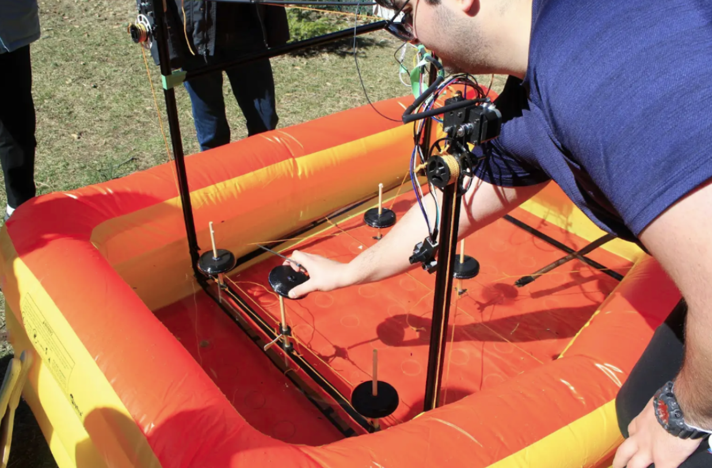
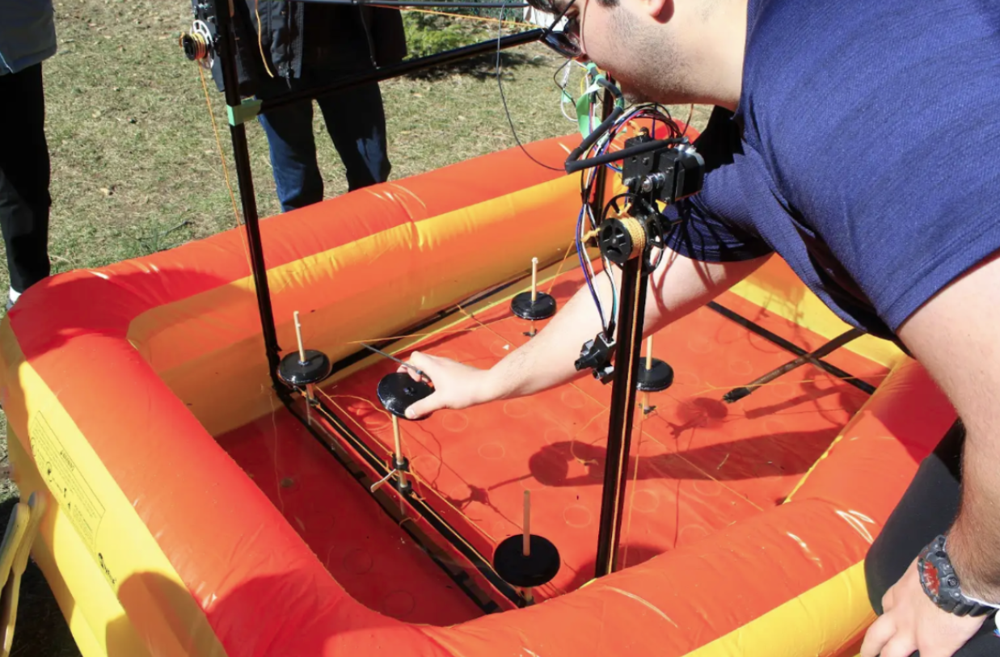

Wave Energy Converter Mooring System
Optimizing energy extraction with advanced buoy motion capture and predictive control

The video below showcases how the back row of buoy simulators traverses to the point of maximal wave genration in our wave simulator
Objective
The Wave Energy Converter project aimed to develop a mooring system prototype that maximized energy extraction while minimizing interference between buoys. The goal was to optimize the alignment and motion of the buoy array to enhance overall system efficiency using real-time sensor feedback and predictive control algorithms.
Process
A sensor suite was designed and implemented to capture precise buoy motion data, feeding real-time measurements into a machine learning-based predictive control algorithm. Mechanical fabrication and assembly of the mooring prototype ensured accurate integration of sensors, structural components, and mechanical linkages. Calibration procedures were iteratively refined to maintain sensor accuracy under variable environmental conditions. Testing protocols were developed using wave simulation experiments to collect empirical data and guide system improvements.
Challenges
Key challenges included maintaining sensor precision and system stability under fluctuating wave conditions, integrating real-time sensor data with predictive algorithms, and ensuring reliable mechanical operation of the mooring prototype. Iterative calibration and validation were critical to overcoming drift, sensor noise, and mechanical misalignment. Coordinating hardware, software, and mechanical subsystems required careful multidisciplinary collaboration to meet stringent performance requirements.
Results
The completed system demonstrated optimized energy extraction with accurate buoy motion tracking and predictive control of the mooring system. Empirical testing verified the reliability and accuracy of both sensor readings and mechanical performance. The project provided hands-on experience in sensor suite design, machine learning for predictive control, mechanical fabrication and assembly, calibration procedures, wave simulation testing, data analysis, system validation, technical documentation, and multidisciplinary collaboration.
 
